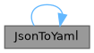
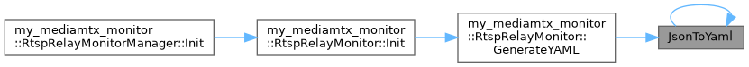
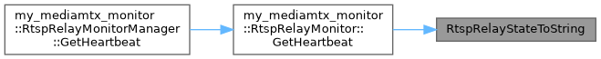

|
PROJECT_NAME 1.0.0
|
结构体 | |
| class | RtspRelayMonitor |
| RTSP 转发守护类 更多... | |
| class | RtspRelayMonitorManager |
| RTSP 转发守护单例管理器 更多... | |
枚举 | |
| enum class | RtspRelayState { STOPPED , STARTING , RUNNING , SOURCE_LOST , ERROR } |
| RTSP 转发状态枚举 更多... | |
函数 | |
| const char * | RtspRelayStateToString (RtspRelayState state) |
| 状态枚举转可读字符串 | |
| std::string | JsonToYaml (const nlohmann::json &j, int indent) |
| 递归地将 nlohmann::json 转为 YAML 格式字符串 | |
|
strong |
| std::string JsonToYaml | ( | const nlohmann::json & | j, |
| int | indent | ||
| ) |
递归地将 nlohmann::json 转为 YAML 格式字符串
将 nlohmann::json 转为 YAML 格式字符串（递归）
| j | 当前 JSON 节点 |
| indent | 缩进层级 |
| j | JSON 节点 |
| indent | 当前缩进层级（默认 0） |
引用了 JsonToYaml().
被这些函数引用 RtspRelayMonitor::GenerateYAML() , 以及 JsonToYaml().


| const char * RtspRelayStateToString | ( | RtspRelayState | state | ) |
状态枚举转可读字符串
引用了 ERROR, RUNNING, SOURCE_LOST, STARTING , 以及 STOPPED.
被这些函数引用 RtspRelayMonitor::GetHeartbeat().
